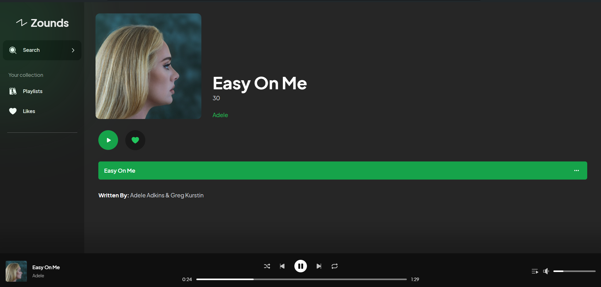
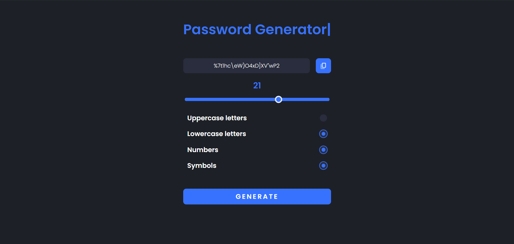
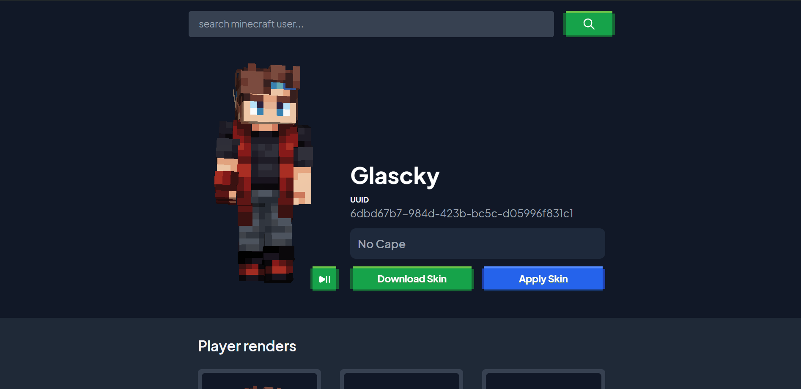

Mi fortaleza radica en mi habilidad para resolver problemas con razonamiento lógico, mi impulso constante por lograr metas, y mi capacidad para trabajar en equipo de manera efectiva. Me adapto con facilidad a los cambios y mantengo la calma bajo presión, lo que me permite enfrentar cualquier desafío con confianza.
Mi misión es transformar ideas en soluciones tecnológicas que realmente mejoren la vida de las personas. Me dedico a abordar desafíos con creatividad, siempre buscando maneras de hacer que la tecnología sea más accesible y efectiva. Cada proyecto es una oportunidad para aprender, y me esfuerzo por crear aplicaciones y herramientas que sean intuitivas y útiles. Mi compromiso es ofrecer resultados de alta calidad que reflejen mi dedicación a la innovación y a un impacto positivo, asegurando que cada línea de código contribuya a una experiencia mejor y más significativa para todos.
Mi visión es ser un creador de soluciones tecnológicas que no solo resuelvan problemas, sino que también inspiren y enriquezcan la vida cotidiana. Aspiro a desarrollar proyectos que combinen funcionalidad y simplicidad, haciendo que la tecnología sea una herramienta accesible y poderosa para todos. Quiero ser reconocido por mi capacidad para abordar desafíos complejos con un enfoque innovador, siempre buscando maneras de mejorar y adaptar mis soluciones a las necesidades cambiantes de los usuarios. Mi objetivo es construir un legado de tecnología que sea tanto avanzada como humana, aportando un valor real y duradero en cada experiencia que diseño.
Atención a la Opinión: Valoro y escucho activamente las ideas y comentarios de los
demás, reconociendo que las perspectivas diversas enriquecen el proceso creativo y ayudan a mejorar el
producto final.
Innovación en la Solución de Problemas: Busco constantemente soluciones alternativas y
creativas para superar desafíos y errores, proponiendo ideas frescas y efectivas que puedan mejorar el
resultado final.
Compromiso con la Mejora Continua: Me esfuerzo por aprender de cada experiencia y
buscar oportunidades para mejorar, tanto en mis habilidades técnicas como en mi enfoque hacia el
trabajo.
Este certificado acredita que Eduar Chanaga ha completado el nivel de educación secundaria con una especialidad técnica en informática.
VerEste certificado acredita que Eduar Chanaga ha completado un curso especializado en la programación de software, adquiriendo habilidades técnicas avanzadas.
VerBusco contribuir a un equipo dinámico donde mi experiencia como programador full stack y administrador de bases de datos impulse el desarrollo de soluciones digitales que marquen una diferencia real. Mi objetivo es crear productos que no solo funcionen, sino que inspiren y emocionen, aplicando creatividad y eficiencia en cada línea de código. Estoy comprometido con la mejora continua y la implementación de estrategias que transformen desafíos en oportunidades, buscando siempre superar las expectativas de mis clientes y colaboradores.
Frontend: Diseño y desarrollo de interfaces de usuario utilizando HTML, CSS y JavaScript.
Backend: Creación de aplicaciones y servicios con Python y Java, manejo de bases de datos con MySQL.
Diseño y Creación: Diseño y desarrollo de APIs RESTful o SOAP para integrar diferentes sistemas y aplicaciones.
Scripts y Herramientas: Desarrollo de scripts en Python para automatizar tareas repetitivas y procesos de datos.
Actualizaciones y Corrección de Errores: Mantenimiento de sistemas existentes, corrección de errores y actualizaciones de seguridad.
Sincronización de Datos: Integración de diferentes sistemas y plataformas para sincronizar datos y procesos.
Estrategia y Diseño: Asesoramiento en la arquitectura de sistemas, selección de tecnologías y diseño de soluciones.
Optimización de Código: Análisis y mejora de la eficiencia del código existente.
Liderazgo de Equipo: Coordinación de equipos de desarrollo, planificación de proyectos y gestión de recursos.
Metodologías Ágiles: Implementación y supervisión de metodologías ágiles como Scrum o Kanban.
GitHub: Gestión de repositorios de código, colaboración en proyectos y control de versiones utilizando Git y GitHub.
Aplicaciones a Medida: Creación de soluciones a medida para satisfacer necesidades específicas de los clientes.
Reproductor de Música: Inspirado en Spotify, pero Único
Este proyecto comenzó como un clon de Spotify, pero se diferenció al incorporar una función que crea automáticamente playlists con las canciones más escuchadas, sin necesidad de intervención del usuario. Una experiencia personalizada y sin esfuerzo.
Generador de Contraseñas Seguras
Este proyecto facilita la creación de contraseñas aleatorias según las preferencias del usuario, mejorando la seguridad de la información de manera sencilla y efectiva.
Página de Skins
Esta página permite a los usuarios explorar, descargar y guardar skins de Minecraft, incluyendo las de sus Youtubers y Streamers favoritos, ofreciendo una experiencia divertida y personalizada.
